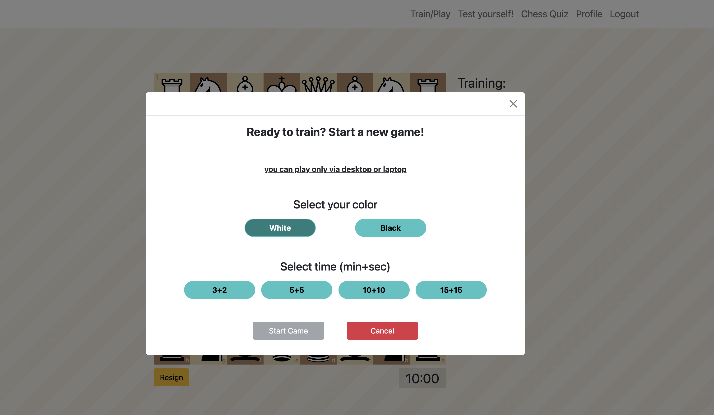
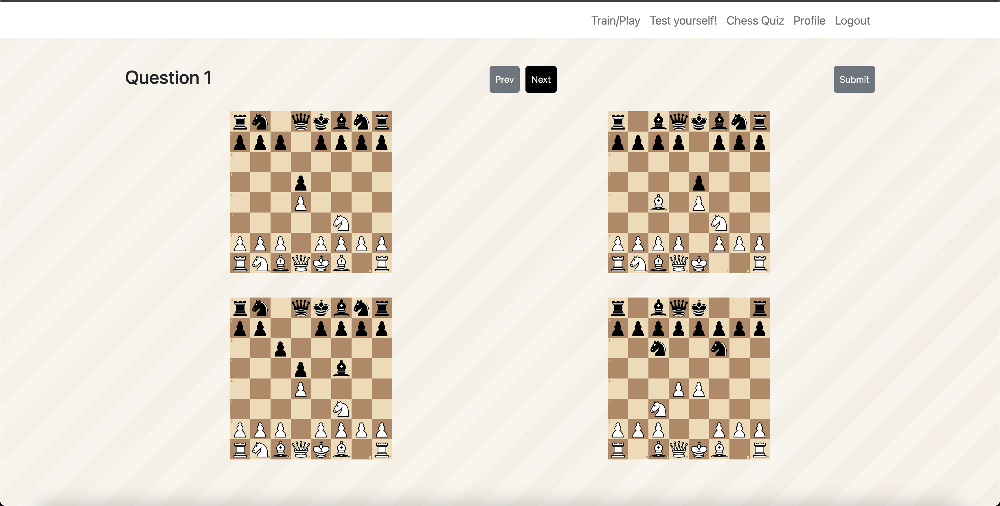
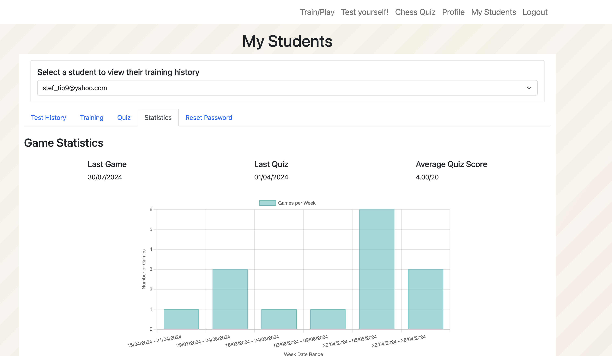
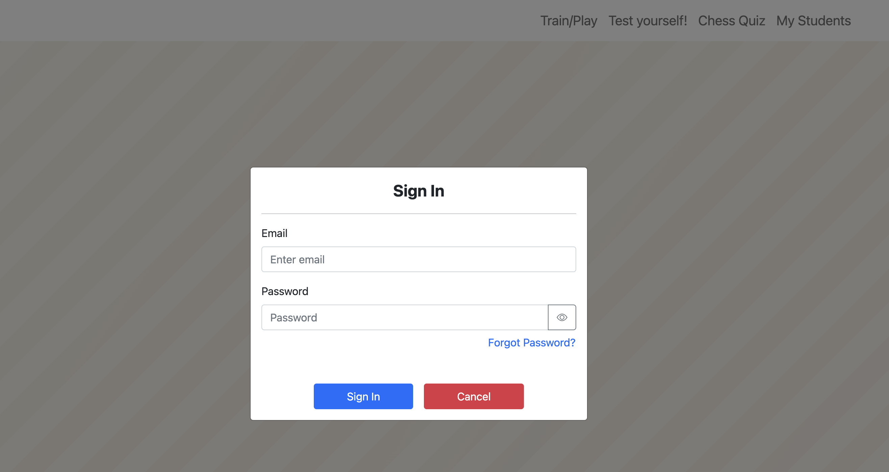

Adaptive play
Players face a chess engine calibrated to their skill level.

Chess training research platform
A study platform for understanding how AI-generated chess tips can support practice, feedback, and skill development.
The study
The platform was built for chess learners, coaches, and academies. Players practice against an adaptive chess engine, receive AI-generated tips under different assistance conditions, complete quizzes and tests, and generate progress data for learning analysis.
Platform preview

Players face a chess engine calibrated to their skill level.

Selected training conditions provide real-time AI-generated move guidance.

Participants complete chess questions and structured test games.

Coaches can review student engagement, outcomes, and progress over time.

Training flow
Each participant can have a tailored profile, training condition, and activity history. The platform records games, tips, quiz performance, and engagement measures for later analysis.
Participate
Use the relevant form below if you are a coach, academy manager, parent, or chess player interested in participating.